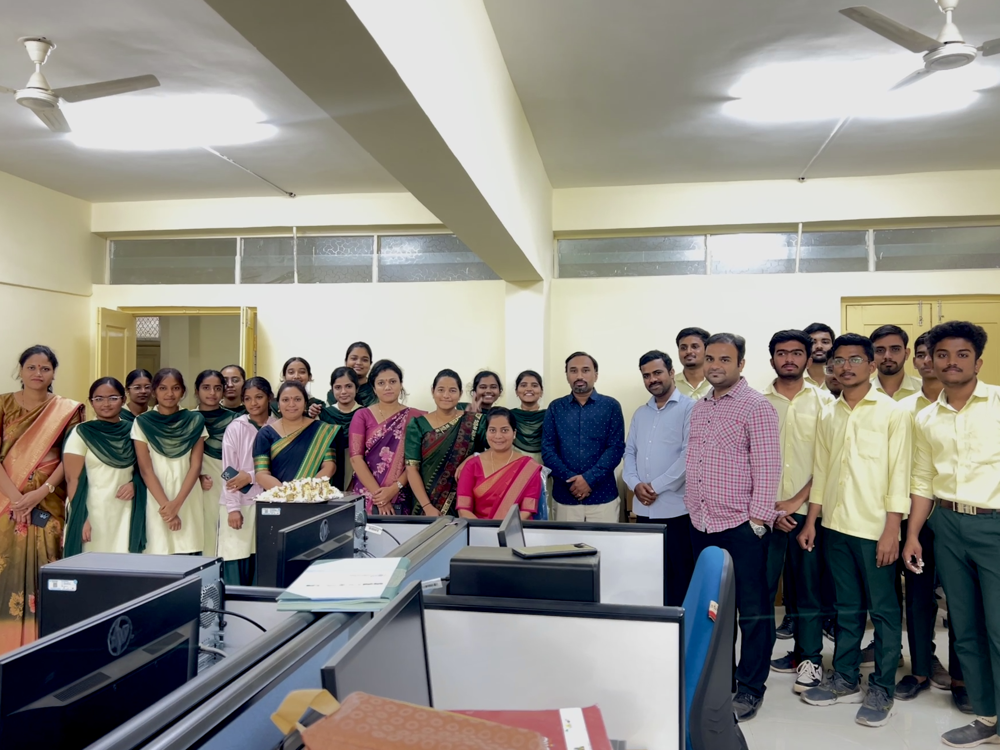

The Computer Science and Design (CSD) batch focuses on combining technical computing skills with creative design thinking. Students in this program learn core computer science subjects such as programming, algorithms, databases, and networks, while also exploring areas like user experience (UX), graphics, animation, and visual communication. This unique mix helps students understand both how technology works and how people interact with it. The CSD batch is trained to create practical, user-friendly, and visually appealing digital products such as apps, websites,
